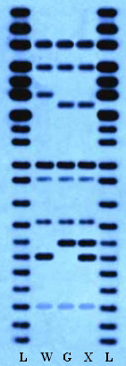

Our genes encode the instructions that define our traits. Each of us has thousands of genes, which are made of DNA and reside in our chromosomes. DNA is a special molecule in that it contains all the instructions that are necessary for the development and functioning of the cell (and indirectly the whole organism). DNA is also the substance that is responsible for passing on hereditary traits to new generations during reproduction. Although we find DNA in all living organisms, it is also the DNA that makes us different. Each species carries a unique, specific code in their DNA.
GMO is an abbreviation for genetically modified organism, an organism whose genetic material has been modified, especially by genetic engineering (the technology entailing all processes of altering the genetic material of a cell to make it capable of performing the desired functions).
On the picture below, you can see DNA samples of wild type (WT) salmon, genetically modified (GM) salmon and offspring of WT and GM. As noticed, there are differences between the restriction patterns of the three different salmons.
 Figure 1. A photo of restriction patterns, where: L – molecular weight DNA ladder; W – restricted DNA of wild type salmon; G – restricted DNA of genetically modified salmon; X – restricted DNA of an offspring of wild type and genetically modified salmon.Take a minute and think about it!
Your task is to compare the restriction patterns of WT salmon, GM salmon and an offspring of WT and GM salmons. On the basis of the comparison you should conclude if the offspring of WT and GM salmon is a hybrid or it is not.